SCA is a VS Code extension. It reads your C and C++ files every time you save and marks code that can crash or break a coding rule — before the code is compiled, tested or flashed.
This walkthrough explains why SCA exists, how it works, and how to use it — with real screenshots and short recordings from VS Code on the test project car-control.
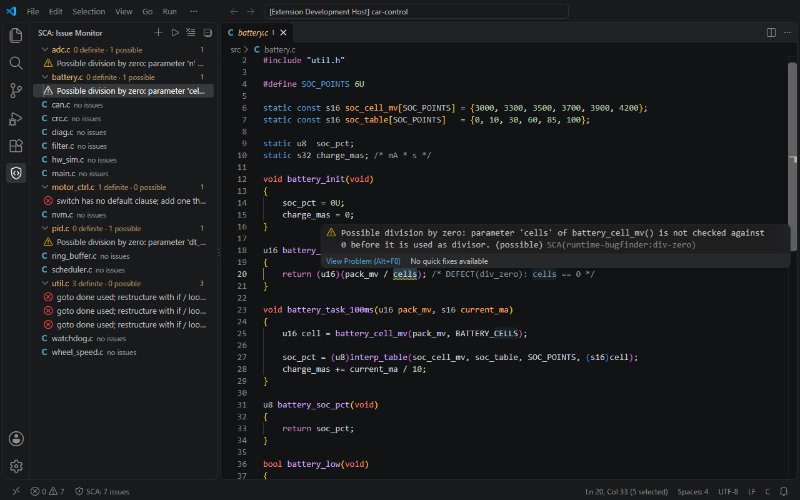
pack_mv / cells — nobody checks that cells is not 0.Some bugs do not show up in a normal test. They wait for one special value — and then the controller stops.
return pack_mv / cells; works in every test, because the tests always pass 12 cells. One day a
corrupted configuration passes 0: division by zero, the ECU resets.
Found by the developer while typing: seconds to fix. Found in system test, at the customer or in the car: days, a recall, or a safety case. The earlier, the cheaper.
Read the code like a careful reviewer — on every save — and point at lines where a value can go wrong or a coding rule is broken. No compile, no test run needed.
If you save again while a file is still being checked, the old run is cancelled. You always see the result for the code that is on disk now.
The parser reads the code before the preprocessor. Macros are not expanded. When a function cannot be parsed cleanly (often because of macros), SCA stays quiet for that function instead of guessing.
| Word | Meaning | Example |
|---|---|---|
| Monitor | The list of files and folders SCA watches in this workspace. | the src folder |
| Finding | One reported problem: a file, a line, a rule and a message. | battery.c line 20 |
| Rule ID | Name of the check that reported it: <rule set>:<rule>. | runtime-bugfinder:div-zero |
| Definite | SCA is sure: the problem is there on every run. | x / 0, a goto |
| Possible | It can happen for some input. Check the callers or add a guard. | x / n, n unchecked |
| Guard | A test before the risky line that rules the bad value out. | if (n == 0) return 0; |
| False positive | A finding on correct code. We count them and keep them at zero. | see “How we measure” |
Update later: git pull and run the installer again. Remove: add -Uninstall.
# once git clone https://github.com/Tomasi12/sca.git cd sca # build, package and install into VS Code powershell -ExecutionPolicy Bypass -File .\installer.ps1 # optional: run all tests first, install only if green powershell -ExecutionPolicy Bypass -File .\installer.ps1 -RunTests
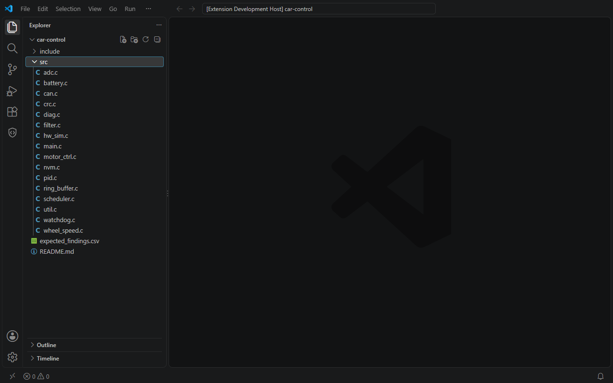
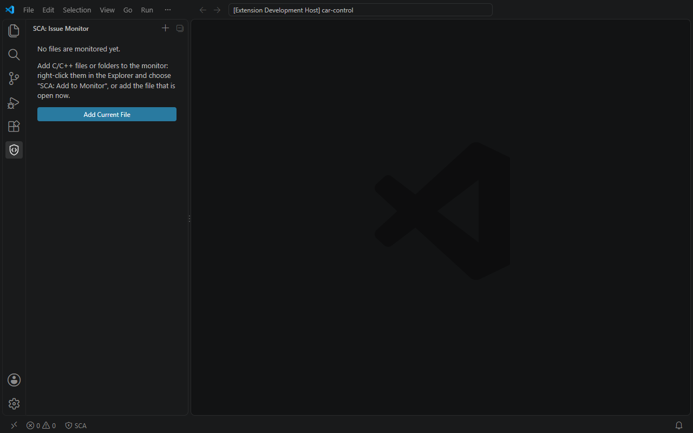
Folders like build, third_party, node_modules are skipped
(setting sca.monitor.exclude). The list is remembered for this workspace.
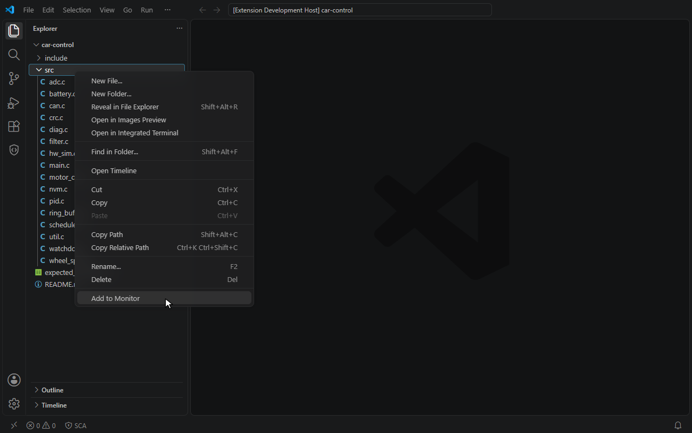
src.src → Add to Monitor → findings appear → status bar shows SCA: 7 issues.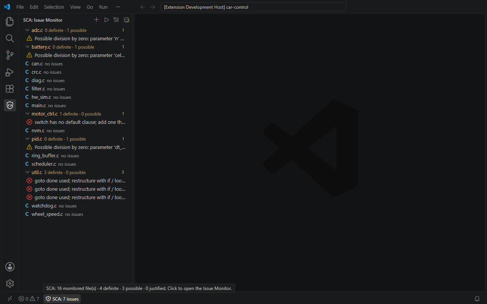
src. Files with findings are expanded.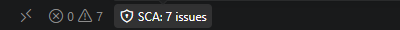
cells is a parameter of battery_cell_mv(). Nothing in the
function checks it against 0, so any caller can pass 0 → possible division by zero.
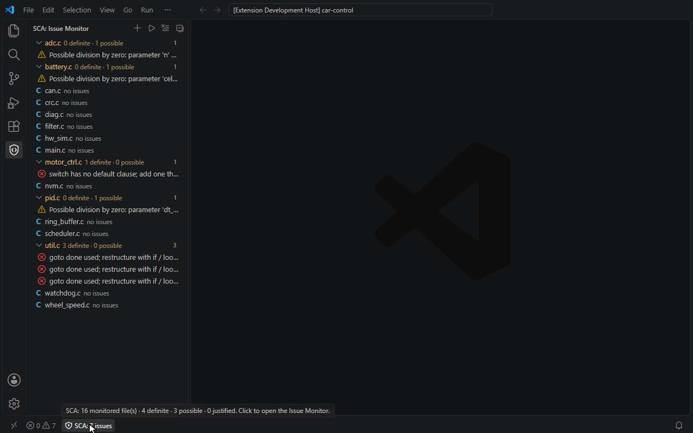
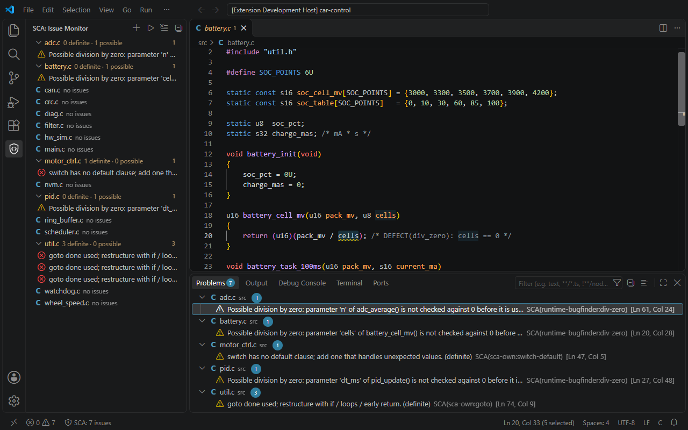
SCA(sca-own:switch-default), and line, column.SCA in the panel's filter box.if (cells == 0U) { return 0U; }battery.c → no issues.Turn on autosave with File → Auto Save. SCA waits 300 ms after the last save, so typing with autosave does not cause a check per keystroke.
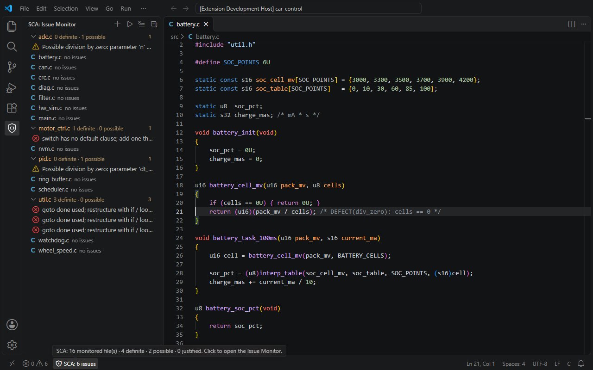
battery.c — no issues.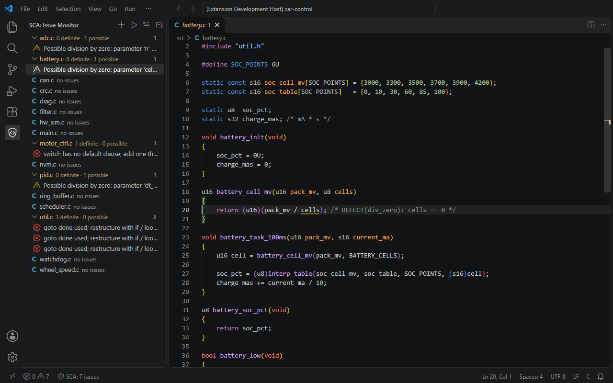
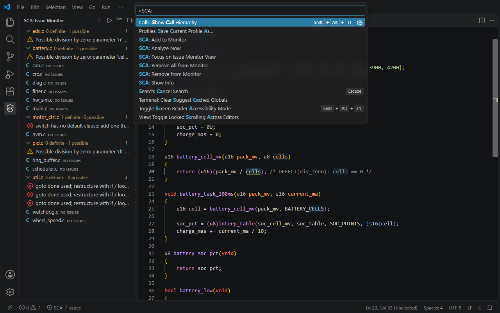
SCA: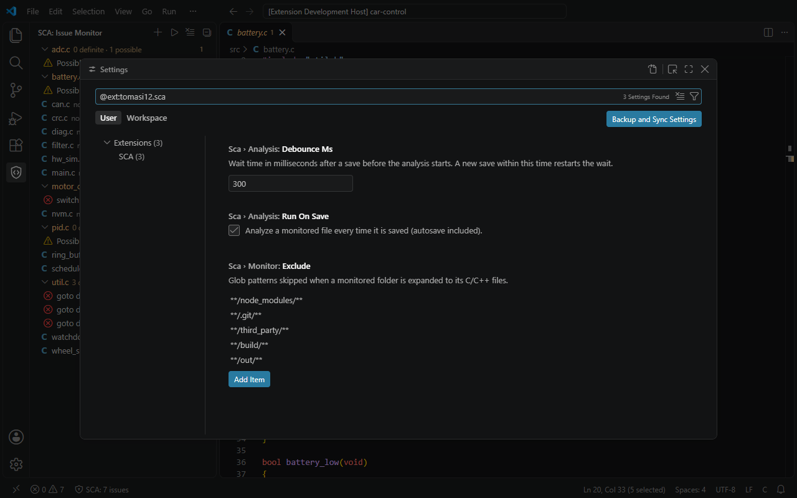
@ext:tomasi12.sca| Command | Does |
|---|---|
| SCA: Add to Monitor | Watch the file/folder (menu, palette, +) |
| SCA: Remove from Monitor | Stop watching it (× in the view) |
| SCA: Remove All from Monitor | Empty the monitor |
| SCA: Analyze Now | Check every monitored file at once (▶) |
| Setting | Default | Meaning |
|---|---|---|
sca.analysis.runOnSave | on | Check on every save |
sca.analysis.debounceMs | 300 | Wait after a save |
sca.monitor.exclude | build, third_party, … | Folders never checked |
runtime-bugfinder:div-zero
Divisor is a function parameter that nobody checks against 0 → possible. Divisor is the constant 0 → definite.
sca-own:switch-default
Every switch needs a default that handles unexpected values. Nested switches need their own.
sca-own:goto
Every goto is reported. It makes the control flow hard to follow and to review.
Reported possible
u16 battery_cell_mv(u16 pack_mv, u8 cells) { return (u16)(pack_mv / cells); }
Not reported guarded
u16 battery_cell_mv(u16 pack_mv, u8 cells) { if (cells == 0U) { return 0U; } return (u16)(pack_mv / cells); }
Guards SCA understands: if (n != 0), if (n > 0), if (n),
the else of if (n == 0), n ? a / n : 0, n != 0 && …, an earlier
if (n == 0) return/goto/break/continue/abort();, an earlier assert(n != 0), and a static
function whose callers all pass non-zero constants.
car-control is a small embedded-style C99 controller written only to test SCA. Each planted problem has a marker on its line:
/* DEFECT(div_zero): … */ — a run-time error: SCA should report it./* RULE(goto): … */ — a rule violation: SCA should report it./* SAFE(div_zero): … */ — correct code that looks risky: reporting it is a false positive.The markers are collected into expected_findings.csv — the answer key. One command compares SCA with it:
npm run benchmark -- ../dummy_project
SCA benchmark: dummy_project ============================ category expected found missed false pos. div_zero 6 3 3 0 switch_default 1 1 0 0 goto 3 3 0 0 TOTAL 10 7 3 0 Recall (covered categories): 70 % Missed: src/scheduler.c:50 div_zero struct field as divisor src/wheel_speed.c:28 div_zero global calibration value src/wheel_speed.c:57 div_zero local float at standstill 32 files, 7 findings, 3 checks, ~110 ms
Result on car-control as committed on 14 Nov 2026. The 3 misses need value tracking (fields, globals, locals) — the next big step.
static callers in the same file).break.src → Add to Monitor.More: README · tech stack · changelog · rule catalog. Screenshots and recordings were taken on 14 Nov 2026 in VS Code 1.146 with SCA 0.0.1 on car-control.